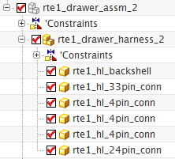

Review the harness assembly
-
In the Assembly Navigator
 , double-click the top level assembly rte1_drawer_assm_2 to make it the Work Part.
, double-click the top level assembly rte1_drawer_assm_2 to make it the Work Part.

The Assembly Navigator shows all of the connectors that you added to your wiring harness subassembly.

-
Close all parts without saving.